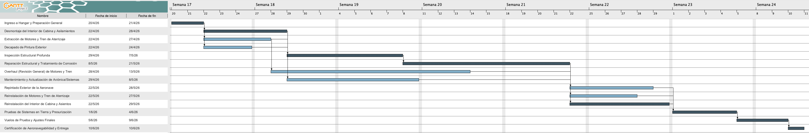
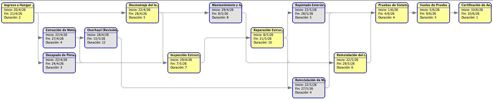
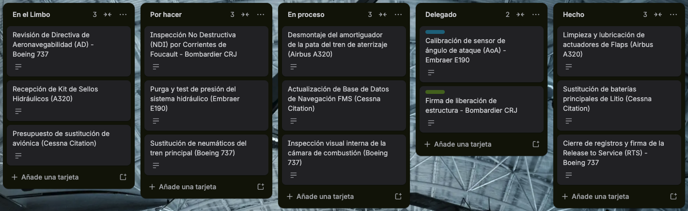

1. Introducción
El entorno operativo de un hangar de aeronaves difiere radicalmente de cualquier almacén logístico o planta de manufactura industrial tradicional.
Un hangar destinado al Mantenimiento, Reparación y Revisión (MRO, por sus siglas en inglés) constituye un ecosistema de precisión crítica donde la producción no se centra en la fabricación masiva y en cadena de bienes de consumo, sino en la restitución meticulosa, certificada y segura de la aeronavegabilidad de activos que poseen un valor de cientos de millones de dólares. En este contexto de alta exigencia técnica y regulatoria, la dirección de la producción trasciende la simple asignación diaria de tareas; se erige como una coreografía matemática de recursos humanos altamente cualificados, cadenas de suministro globales de repuestos, infraestructuras de altísima complejidad y un cumplimiento normativo aeronáutico draconiano.
A nivel global, el valor del mercado MRO proyecta alcanzar los 108.000 millones de dólares para el año 2030, respaldado por una tasa de crecimiento anual compuesta (CAGR) del 4.8%. En esta industria, cada decisión operativa, cada estrategia de secuenciación y cada dólar invertido en la gestión de instalaciones o en el control de calidad protege directamente esta inmensa base de ingresos y, lo que es más importante, salvaguarda vidas humanas.
La gestión de un hangar comercial moderno conlleva una carga de cumplimiento normativo que la inmensa mayoría de los directores de operaciones en otros sectores industriales jamás llegan a enfrentar. La verdadera diferencia entre un hangar de base que supera las auditorías internacionales con éxito y uno que resulta penalizado, paralizado o clausurado, raramente radica en la destreza técnica individual de sus ingenieros o mecánicos. Por el contrario, la clave del éxito reside en la trazabilidad documental absoluta y en la integridad sistémica de su gestión de la producción.
EASA Part-145 (Planificación de la Producción): Las normativas internacionales que rigen el sector, tales como la Parte 145 de la Agencia Europea de Seguridad Aérea (EASA Part-145) y las regulaciones de la Administración Federal de Aviación estadounidense (FAR Part-145), establecen directrices de obligado cumplimiento. Específicamente, el marco regulatorio de EASA Part-145 (Anexo II del Reglamento UE n.º 1321/2014), en sus apartados relativos a la gestión de la capacidad y planificación de la organización, exige de forma vinculante que el centro MRO demuestre y garantice la disponibilidad coordinada de personal certificado, herramientas calibradas, equipos de izado, materiales con trazabilidad documental absoluta y datos de mantenimiento rigurosamente actualizados antes de que cualquier tarea sobre la aeronave sea siquiera iniciada en las bahías. Esto impone que la planificación de la producción no sea interpretada como un mero servicio de soporte administrativo, sino como el eje integrador de las mejores prácticas globales, gestionando proactivamente la disponibilidad de los slots, el control de inventarios
El coste financiero y operativo de los fallos en este ecosistema es verdaderamente astronómico. Las interrupciones no se miden en simples retrasos de entrega, sino en aeronaves inmovilizadas en tierra (estado AOG, Aircraft On Ground), cancelaciones de vuelos comerciales, multas regulatorias y la erosión instantánea de la confianza de las aerolíneas clientes.
El Coste de la Ineficiencia Técnica: A modo de ejemplo ilustrativo del peso de la infraestructura, un fallo no planificado en el sistema electromecánico de las puertas monumentales de un hangar acarrea un coste medio de 47.000 dólares, sumando las reparaciones directas, los retrasos en el reposicionamiento de las aeronaves de fuselaje ancho y la disrupción general de todo el calendario MRO de la estación. Sorprendentemente, el 34% de las citaciones y multas de seguridad industrial (OSHA) en la aviación involucran lagunas en los registros de activos de la instalación (como grúas o sistemas contra incendios), no errores operativos de los mecánicos de vuelo.
Por consiguiente, adentrarse en la dirección de operaciones en este sector exige abandonar de inmediato la improvisación y los métodos de gestión analógicos. Requiere implementar un enfoque gerencial fuertemente estructurado, basado en datos cuantitativos y modelado matemático, que abarque desde la evaluación de la viabilidad económica inicial (Break-Even) y el diseño estructural de las maniobras, hasta la optimización de los inventarios mediante algoritmos (EOQ), previsiones probabilísticas de demanda, robustos procesos de Planificación de Ventas y Operaciones (S&OP), sistemas de Planificación de Requerimientos de Materiales (MRP) y el control visual de la planta productiva mediante filosofías Lean Manufacturing y Seis Sigma. El presente informe de investigación desglosa de manera exhaustiva y analítica cada uno de estos vectores estratégicos, proporcionando una visión integral, cohesionada y eminentemente gerencial para la dirección moderna de la producción aeronáutica.
2. Punto de Equilibrio de Producción
Antes de abordar la optimización de los flujos de trabajo físicos en el interior del hangar, es imperativo para la dirección establecer la viabilidad financiera basal de las operaciones.
El mantenimiento pesado de aeronaves implica la absorción de costes fijos colosales derivados del mantenimiento de la macro-infraestructura (hangares que frecuentemente superan los 7.000 metros cuadrados de espacio de luz libre), las pólizas de seguros aeronáuticos, la certificación y calibración continua de las instalaciones (como tanques privados de almacenamiento de agua de 1.00.000 de litros para sistemas de supresión de incendios por espuma de baja expansión AFFF y sistemas de grúa puente) y, de forma crítica, la retención de una plantilla de personal técnico e ingenieros altamente especializados.
Para modelar esta realidad operativa y financiera de forma precisa, se ha desarrollado un análisis del Punto de Equilibrio de Producción (Break-Even Point) aplicado a la carga de trabajo proyectada de un hangar hipotético. El modelo analítico asume un entorno donde la instalación asume de forma íntegra proyectos de mantenimiento pesado para un modelo específico de aeronave comercial. La estructura de costes ha sido parametrizada de la siguiente manera, reflejando de forma fidedigna la alta carga de costes fijos y los elevados consumos de materiales inherentes al sector aeroespacial:
El análisis cuantitativo de esta matriz de costes exige aislar, en primer lugar, los costes fijos totales de la instalación, que ascienden a la suma de 248.000.000 €. Seguidamente, se determinan los costes variables unitarios agregados por cada aeronave procesada, los cuales se sitúan en 165.000.000 € (compuestos mayoritariamente por los inmensos costes de los repuestos y materiales de aviación aprobados). En consecuencia, el margen de contribución generado por cada unidad (aeronave) procesada a través del hangar se establece en 35.000.000 €.
Aplicando la formulación algebraica clásica del punto de equilibrio, el resultado operativo determina que la supervivencia de la estación de mantenimiento exige la facturación, procesamiento completo y liberación al servicio de exactamente 7,09 aeronaves en el periodo analizado.
Desde una perspectiva gerencial y de planificación estratégica, este umbral crítico de 7,09 unidades representa la "Carga Base de Trabajo" (Base Load) innegociable que el departamento comercial y la unidad de planificación táctica (S&OP) deben asegurar contractual y logísticamente para garantizar que la estación no incurra en pérdidas operativas. Este modelo financiero evidencia una extrema sensibilidad matemática al coste de adquisición de los materiales, los cuales representan la abrumadora mayoría de los costes variables.
Dado que la realidad operativa del hangar implica la diversificación de la capacidad de producción para atender simultáneamente a diferentes flotas, se ha expandido el análisis hacia un modelo de equilibrio multiproducto que contempla tres variantes de aeronaves comerciales (Modelos A, B y C). Este enfoque permite evaluar la rentabilidad combinada en función de una mezcla de ventas (sales mix) proyectada.
Al desagregar los márgenes de cada línea de producción, los resultados financieros arrojan que la aeronave con mayor margen de contribución unitario es el Modelo B. Desde un punto de vista de planificación estratégica, la política comercial de la compañía debería priorizar activamente la captación y asignación de slots de mantenimiento para este modelo, maximizando así la conversión de ingresos en margen neto y acelerando la absorción de los costes fijos de la instalación.
Asimismo, el modelo matemático determina las cantidades mínimas críticas que deben procesarse de cada variante para superar el umbral de pérdidas y alcanzar una utilidad operativa positiva. Específicamente, el plan de producción del hangar establece que se deberán vender y liberar al servicio, como mínimo, 18 aeronaves del Modelo A, 12 aeronaves del Modelo B y 9 aeronaves del Modelo C de forma combinada durante el ejercicio.
Conclusión Estratégica y Sensibilidad del Modelo
Este modelo financiero evidencia una extrema sensibilidad matemática al coste de adquisición de los materiales, los cuales representan la abrumadora mayoría de los costes variables de la organización.
Una fluctuación alcista en los precios de las materias primas o una disrupción severa en la cadena de suministro internacional —como la actual escasez global de piezas, los altos precios de los componentes y los retrasos sistémicos en las entregas que experimenta la industria, según lo reportado por gigantes del sector como Airbus e Iberia Maintenance— erosionaría velozmente el margen de contribución unitario. Este escenario macroeconómico desplazaría el umbral de rentabilidad drásticamente hacia arriba, elevando el número de aeronaves requeridas para el equilibrio y obligando de inmediato a la dirección de operaciones a captar un mayor volumen de contratos o a optimizar agresivamente los procesos internos mediante metodologías de mejora continua (Lean-Six Sigma) para evitar el colapso financiero de la operación.
3. Análisis Estructural del Ala de un Avión
La dirección integral de la producción en un hangar no se limita de manera exclusiva al control documental o al flujo logístico; exige imperativamente la integración de la ingeniería de diseño mecánico avanzado para planificar, simular y certificar los protocolos de mantenimiento físico, especialmente las maniobras de manipulación pesada en planta.
Un aspecto singularmente crítico durante las grandes revisiones estructurales es el desmontaje, la inspección no destructiva y el tratamiento anticorrosión de las superficies aerodinámicas de gran envergadura. Los datos analíticos revelan que las infraestructuras de soporte son vectores de riesgo primordiales: un asombroso 62% de los fallos catastróficos en los sistemas de grúas de los hangares están precedidos por la omisión de una simple tarea de mantenimiento preventivo programado.
Para mitigar estos riesgos inaceptables y planificar de manera absolutamente segura las complejas operaciones de izado de componentes masivos en el interior de las instalaciones, se ha evaluado computacionalmente un modelo tridimensional completo de una estructura alar utilizando metodologías de Diseño Asistido por Ordenador (CAD) y simulaciones de Análisis de Elementos Finitos (FEA). El diseño base para la simulación partió de un perfil aerodinámico asimétrico estándar de la serie NACA 2412, alcanzando mediante operaciones algorítmicas de escalado una envergadura de estudio de 10 metros. A este modelo digital se le asignaron rigurosamente las propiedades mecánicas reales de la aleación de Aluminio 2024, un estándar histórico en la industria aeroespacial debido a su excelente relación resistencia-peso y su elevada tolerancia a la propagación del daño.
El protocolo técnico de mantenimiento dictaba la necesidad de suspender temporalmente esta colosal estructura utilizando exclusivamente las grúas puente automatizadas del techo del hangar. El anclaje se diseñó inicialmente proyectando dos áreas circulares de 20 centímetros de diámetro dispuestas estratégicamente en el extradós (cara superior) del ala. La validación de esta maniobra requirió someter el modelo a una simulación de cargas estáticas gravitacionales extremas de $9,81\text{ m/s}^2$ aplicados al volumen total para representar el peso propio.

La resolución de la matriz generó un mapa termográfico de tensiones de Von Mises. El análisis de los resultados reveló que, en lugar de una disipación uniforme, las concentraciones críticas de esfuerzo convergían de manera alarmante y exclusiva en la periferia inmediata de los dos puntos de anclaje, disipándose rápidamente hacia el resto de la estructura. Los sensores virtuales registraron una tensión de cizalladura máxima de 305,55 Megapascales (MPa). Considerando que el límite elástico operativo recomendado del Aluminio 2024 se sitúa en torno a los 345 MPa (punto a partir del cual el material sufre deformaciones plásticas irreversibles que destruirían la aerodinámica del ala), el coeficiente de seguridad estructural ($FS$) resultante de la maniobra planeada es de apenas:
Coeficiente de Seguridad Crítico (FS ≈ 1.1): En el estricto marco de la dirección de operaciones aeronáuticas, el aseguramiento de la calidad (QA) y la seguridad laboral regida por entidades como OSHA o EASA, un coeficiente de seguridad estático de 1.1 es operativamente inaceptable. Este exiguo margen de error asume condiciones de laboratorio perfectas. En la realidad de un hangar, la ingeniería de mantenimiento debe imponer márgenes de seguridad sustancialmente mayores (típicamente superiores a 2.5 o 3.0 para equipos de elevación) para absorber variables incontrolables tales como variaciones locales en la densidad del material, cargas dinámicas imprevistas durante el levantamiento inicial (sacudidas o aceleración repentina de los servomotores de la grúa), o la potencial existencia de microfisuras por fatiga preexistentes en la aeronave sometida a revisión.
La directriz gerencial y vinculante derivada de este análisis computacional exige la paralización inmediata del protocolo original y el rediseño de los utillajes de soporte en el hangar. Como medidas correctoras obligatorias, se debe ordenar al departamento de mecanizado la fabricación de cunas de soporte inferior ergonómicas (slings de Kevlar) o la implementación de vigas balancín (spreader bars) que incrementen el número de puntos de anclaje, logrando así distribuir las cargas sobre un área superficial mucho mayor y garantizando la integridad tanto del activo multimillonario como del personal técnico que opera bajo el mismo.
4. Modelo EOQ
El aprovisionamiento logístico es la columna vertebral invisible que sostiene el cumplimiento de los exigentes tiempos de ciclo en un centro MRO.
En el sector de la aviación comercial, el inventario no es simplemente un activo contable almacenado; es una herramienta de protección directa contra el tiempo de inactividad. La inmovilización forzosa de una aeronave debido a la falta de un repuesto crítico (escenario conocido mundialmente como AOG, Aircraft On Ground) acarrea penalizaciones financieras astronómicas por pérdida de ingresos operativos de la aerolínea, además de destruir por completo la planificación a corto plazo del taller.
Para lograr el nivel óptimo de inventario —buscando minimizar los costes totales de gestión logística sin comprometer en ningún caso la robustez de la cadena de suministro— la dirección ha implementado un enfoque analítico sustentado en el modelo clásico de Cantidad Económica de Pedido (EOQ, por sus siglas en inglés). Este despliegue estratégico se ha centrado en un consumible de altísima criticidad y rotación constante en la pista: los neumáticos del tren de aterrizaje principal de las aeronaves.
El modelo matemático EOQ busca determinar el punto de equilibrio financiero exacto y la intersección perfecta entre dos fuerzas opuestas: los costes de emisión de pedidos frente a los costes de posesión o mantenimiento del inventario. Para dominar estas variables, la organización ha evolucionado tecnológicamente, integrando tableros de control interactivos alimentados por lógicas algorítmicas de última generación que permiten a los planificadores simular fluctuaciones operativas en tiempo real.
El análisis de sensibilidad profunda derivado del panel interactivo revela directrices fundamentales que moldean la política global de compras del hangar:
Sensibilidad y Elasticidades del Lote Óptimo
Curva de Demanda versus Tamaño del Lote ($Q$): Cuando se proyecta un incremento sostenido en la demanda de neumáticos, el tamaño del pedido óptimo indudablemente crece, pero no lo hace con una progresión lineal. La curva gráfica se va aplanando progresivamente debido al efecto de la raíz cuadrada presente en la estructura de la fórmula de Wilson ($\sqrt{2DS/Cp}$). Este fenómeno matemático protege financieramente al hangar, indicando a la gerencia que las incipientes economías de escala absorben de forma natural una gran parte del impacto logístico.
Impacto de la Escalada en el Coste de Mantenimiento de Stock ($Cm$): Si los costes operativos del hangar se disparan ante mayores exigencias regulatorias de climatización o escasez de espacio físico, la estrategia óptima es reducir drásticamente el tamaño físico de cada lote. Esto fuerza a la organización a pivotar hacia un modelo Just-in-Time mitigado, diseñado para mantener el inventario físico al mínimo técnico indispensable.
Un hallazgo analítico de gran valor gerencial extraído de las simulaciones es el cálculo de los coeficientes de elasticidad del modelo EOQ. El análisis matemático demuestra de manera irrefutable que un incremento proyectado del 10% en la previsión de la demanda histórica arroja una elasticidad estática del +48.8% respecto a la variación del Lote Óptimo de pedido ($Q^*$). En términos logísticos absolutos, esto se traduce en que el responsable de compras únicamente debe aumentar el volumen de las órdenes de compra en un 4,88% real y constante ($\sqrt{1.10} = 1.0488$). Este amortiguador logístico implícito resulta vital para escalar agresivamente las capacidades comerciales de la planta sin el riesgo de disparar el capital inmovilizado en los almacenes.
5. Alisado Exponencial Doble
Para alimentar con certeza los complejos modelos paramétricos de gestión de inventarios, la organización MRO requiere imperativamente pronósticos de demanda de materiales que sean robustos, fiables y estadísticamente válidos.
El reemplazo y consumo de componentes aeronáuticos de alta rotación raramente sigue una distribución plana; está fuertemente sujeto a la estacionalidad de las flotas y a la emisión repentina de Directivas de Aeronavegabilidad (AD) obligatorias. Para capturar y domesticar matemáticamente esta volatilidad, la dirección de producción ha implementado un modelo predictivo avanzado de Alisado Exponencial Doble (Método de dos parámetros de Holt). Este enfoque supera al alisado simple al disociar y ajustar continuamente dos variables fundamentales en la serie temporal: el nivel base estacionario de la demanda (coeficiente $\alpha$) y la tendencia subyacente de crecimiento o contracción temporal (coeficiente $\beta$).
El verdadero hito en la aplicabilidad gerencial de este sistema radica en la integración de un motor de cálculo iterativo de fuerza bruta (Grid Search). Este motor actúa como el equivalente de alto rendimiento de los algoritmos de resolución no lineal comerciales, pero está diseñado para barrer y escanear el espectro continuo y absoluto de las constantes de alisado desde 0.00 hasta 1.00, corrigiendo las limitaciones de los motores estándar que solían truncarse artificialmente en los umbrales de 0.01 y 0.99.
Al poseer una visibilidad algorítmica total, el sistema permite al director de producción decidir estratégicamente el criterio de minimización del riesgo a través de dos métricas fundamentales:
Criterios de Optimización en Pronósticos
Optimización por Error Cuadrático Medio (ECM): Esta configuración matemática penaliza de manera exponencial los grandes desvíos puntuales. En el ámbito del mantenimiento aeronáutico, seleccionar el ECM es la decisión obligatoria cuando se planifica sobre componentes de alta criticidad (No-Go items), donde un fallo de stock puede generar un escenario AOG inmediato y paralizar toda la cadena de producción.
Optimización por Valor Medio del Error (VME): Orientado a equilibrar de forma lineal las desviaciones acumuladas en repuestos estándar o consumibles secundarios de baja criticidad.
Alineando estrictamente estas condiciones del código fuente con la teoría de operaciones, el modelo predictivo opera en perfecta sincronía, ofreciendo un escudo analítico de certidumbre que estabiliza las compras de materias primas y apacigua el flujo del Plan Maestro de Producción (MPS) aguas abajo.
6. Planificación de Ventas y Operaciones
El verdadero ápice de la complejidad organizativa, de recursos humanos y de gestión financiera en la industria MRO global se manifiesta durante la ejecución y planificación de un "D-Check" (Gran Parada o Heavy Maintenance Visit).
A diferencia de los rutinarios C-Checks, el D-Check representa el nivel de escrutinio técnico, físico y de ingeniería más exhaustivo, penetrante e invasivo que existe en el ciclo de vida de la aviación comercial, implicando el desmontaje casi total del avión para su inspección estructural profunda.


Para un control quirúrgico de los tiempos de esta macro-operación, se ha estructurado un Análisis Analítico de Tiempos y Holguras detallado en la siguiente matriz interactiva:
Tras la resolución algorítmica de la matriz, se determina un camino crítico estricto compuesto por la secuencia:
Cualquier retraso en alguna de estas actividades supondrá un aumento directo en la duración total del proyecto, fijada en 38 días laborables. En la realidad de un D-Check, los retrasos surgen habitualmente por "hallazgos" imprevistos (como fatiga oculta del metal o corrosión galvánica), expandiendo repentinamente el alcance del trabajo conocido (scope creep).
Para evitar fallos sistémicos en cadena, las estrategias gerenciales más sofisticadas implementan los postulados de la Gestión de Proyectos por Cadena Crítica (CCPM). Este enfoque exige retirar los márgenes de seguridad ocultos que los técnicos inflan localmente. A cambio, la gerencia agrega estratégicamente amortiguadores de proyecto (project buffers) consolidados al final del cronograma y amortiguadores de convergencia (feeding buffers) en las intersecciones de tareas secundarias. Esto mitiga el "síndrome del estudiante" y la Ley de Parkinson, garantizando una cadencia industrial de alta velocidad hacia la firma del certificado de aeronavegabilidad final.
7. Sistemas MRP Y MPS
Habiendo cimentado la duración macroscópica del proyecto general, el director debe descender al plano operativo táctico a través del suelo del hangar mediante el uso intensivo del Sistema de Planificación de Requerimientos de Materiales (MRP).
La veloz transición desde un modelo reactivo e históricamente estático hacia un sistema dinámico y sincronizado es la frontera que distingue a un centro global MRO de categoría élite de una instalación ineficiente. Integrar orgánicamente la Lista de Materiales y Explosión de Componentes (BOM) con el cronograma de reparaciones permite ejecutar la "Gran Parada" minimizando los tiempos de inactividad de los técnicos originados por la espera de piezas (waiting waste). La estructura del BOM se divide en tres niveles jerárquicos estructurados para los motores objeto de overhaul:
- Nivel 0 (Productos Finales): $P1$ (Kit Overhaul Motor Alta Presión) y $P2$ (Kit Overhaul Motor Baja Presión).
- Nivel 1 (Conjuntos): $C1$ (Conjunto de Rotor) y $C2$ (Conjunto de Estator).
- Nivel 2 (Piezas): $p1$ (Álabe de titanio), $p2$ (Rodamiento principal), $p3$ (Sello térmico O-ring) y $p4$ (Tornillería aeronáutica por lote).
La matriz de simulación evidencia las siguientes directrices estructurales para la toma de decisiones estratégicas globales:
Análisis Crítico de la Carga del BOM
- Dependencia Crítica del Titanio ($p1$): Cualquier leve aumento tanto en $P1$ como $P2$ multiplica masivamente la necesidad total de álabes debido a su alta proporción en el ensamblaje. Acción: Establecer un Stock de Seguridad estratégico equivalente al 15% del consumo medio histórico exclusivo para esta referencia.
- Estabilidad de Rodamientos ($p2$): La demanda es altamente predecible y poco elástica, al depender casi exclusivamente de los ciclos de alta presión ($P1$). Acción: Consolidar pedidos en entregas trimestrales o semestrales, reduciendo el coste logístico.
- Carga de Trabajo del Estator ($C2$): El montaje de $C2$ consume sistemáticamente el 57% de los recursos agregados frente al Rotor ($C1$). Acción: Identificación de $C2$ como "Cuello de Botella" innegociable bajo la Teoría de las Restricciones, planificando una asignación obligatoria de doble turno en esta estación del hangar.
8. Control de Producción
El entorno extremadamente volátil y dinámico de los talleres de soporte (back-shops) donde convergen los flujos continuos de miles de piezas reparables desmontadas enviadas desde la plataforma (como cajas negras de aviónica o actuadores hidráulicos), exige una disciplina de despacho local (dispatching) extraordinariamente rigurosa.
El control táctico de la planta se resuelve evaluando matemáticamente el comportamiento del flujo material de las diferentes colas de trabajo acumuladas frente a los centros de mecanizado o bancos de prueba de control de calidad. Con el objetivo de evaluar empíricamente qué regla heurística de secuenciación gobierna el taller, se procedió a simular y comparar computacionalmente el comportamiento de cinco órdenes de trabajo concurrentes contra los cuatro algoritmos clásicos de gestión de colas: FIFO, SPT, EDD y LPT.
Las poderosas inferencias operativas derivadas de los resultados determinan la política gerencial que se debe instaurar en los talleres satélite:
Análisis Heurístico de Gestión de Colas
La perspectiva de Flujo de Caja (Regla SPT): Si la prioridad fuera puramente maximizar la velocidad interna de facturación y liberar espacio físico en planta, la regla SPT resulta la ganadora indiscutible, ya que minimiza el Tiempo Medio de Flujo a apenas 13 días, evapora el inventario en proceso a un WIP mínimo de 2.32 unidades y eleva el índice de utilización de los recursos mecánicos hasta un sobresaliente 43.08%.
El Impacto del Retraso y la Regla EDD (1.20 días): El axioma fundamental de la producción en aviación comercial establece que el retraso de una pieza crítica puede paralizar por completo la liberación legal y física de un gigantesco avión de fuselaje ancho (Release to Service - RTS), originando pérdidas masivas de cientos de miles de euros para el cliente. Por tanto, bajo penalización contractual, la gerencia debe ordenar la adopción general de la regla EDD, la cual arroja el Retraso Medio global más bajo y eficiente de toda la simulación (sólo 1.20 días).
Como corolario de advertencia, el modelo demuestra que la aplicación imprudente de la regla LPT colapsa materialmente el sistema, elevando el tiempo de flujo a 20.50 días y disparando retrasos acumulados monstruosos de 9.60 días.
9. Lean Manufacturing
En la aviación moderna, la adopción sistémica del paradigma estratégico de Lean Manufacturing y de las metodologías Lean Six Sigma (LSS) no se considera una opción esotérica, sino una política obligatoria diseñada para pulverizar los colosales desperdicios (Muda) que históricamente han sangrado la rentabilidad de las empresas del sector.
La industria MRO se caracteriza por operar en un universo convulso de volumen fluctuante y una brutal variabilidad impredecible en la tipología del daño hallado en los fuselajes. A pesar de estas asimetrías, conseguir establecer un "flujo de trabajo de una sola pieza" (single-piece flow) es viable y se traduce en una reducción salvaje del Turn-Around-Time (TAT) de la nave.
Para consolidar la transición hacia esta filosofía de control visual inmediato, la dirección corporativa ha decretado la disolución de los antiguos paneles analógicos e instituido tableros lógicos de empuje y tracción tipo Kanban integrados en formato digital.

El flujo de valor Lean integral adoptado en el taller se modela a través de las siguientes columnas de procesamiento, ofreciendo una panorámica transparente al mánager a nivel de pista:
- En el Limbo / Pendiente de Asignación: Canal de entrada para requerimientos burocráticos urgentes e imprevistos, como la "Revisión imperativa de la nueva Directiva de Aeronavegabilidad (AD) estipulada para el Boeing 737".
- Por Hacer (Cola Activa): Asignaciones documentadas listas para inyección en planta tan pronto como las capacidades se liberen, como la "Inspección No Destructiva Estructural (NDT) mediante Corrientes de Foucault sobre el fuselaje del Bombardier CRJ".
- En Proceso (WIP - Zona Restrictiva de Flujo Activo): Indicador medular del panel. Siguiendo las leyes de Little, un recuento excesivo de operaciones concurrentes ahoga el rendimiento total y paraliza el hangar al fraccionar la atención humana. Destaca aquí la tarea viva del "Desmontaje integral del amortiguador oleoneumático de la pata principal de un Airbus A320".
- Delegado: Control de tareas críticas de calibración externa y firmas de liberación estructural.
- Hecho: Cierre estricto de registros y firma de la liberación final al servicio (Release to Service - RTS).
10. Conclusión Global Estratégica
La gestión gerencial de un moderno hangar de mantenimiento y servicio de aeronaves demanda la exigencia innegociable de lograr una fusión equilibrada y armónica entre la robustez estática de la ingeniería estructural en su faceta dura, la quirúrgica precisión matemática de las lógicas abstractas asociadas a la analítica moderna de datos (Data Analytics) y, paralelamente, una profunda y holística visión estratégica directiva sobre la cadena global de suministro.
La integración de las facetas diseccionadas en este informe valida el principio de que ninguna instalación MRO que aspire a captar volumen corporativo y pervivir en el mercado puede ser pilotada de manera fortuita, regida por meras corazonadas o la experiencia tribal rudimentaria de sus encargados de taller. El modelo económico requiere un estricto blindaje operativo para asegurar el sobrepasamiento permanente de su ajustado umbral de rentabilidad (Break-Even), concebido para amortizar los astronómicos costes fijos impuestos por las certificaciones e infraestructuras del hangar.
Desde el plano micro, el uso de simuladores tridimensionales FEA conjura catástrofes físicas en planta al paralizar proactivamente maniobras de izado deficientes (como la revelada por el crítico coeficiente de seguridad de 1.1). Simultáneamente, ascendiendo al panorama táctico macro, la reestabilización estocástica mediante las series de Alisado Exponencial Doble retroalimenta con precisión y nutre las reposiciones del inventario óptimo (EOQ), determinando de forma científica las elasticidades necesarias para proteger la tesorería ante fluctuaciones de la demanda.
Transponer esta ingente marea de ecuaciones de ingeniería, reglas heurísticas de secuenciación y colas lógicas hacia una disciplina física de ejecución visual en planta impuesta por la metodología Lean Six Sigma y los tableros sincronizados Kanban, es la forma en la que un equipo gerencial competente cristaliza un verdadero Sistema Maestro de Dirección Industrial Estratégica. Es este enfoque integrado el que transforma una vasta e inerte masa pasiva de frío metal en un pujante centro activo de flujo de rendimientos, velocidad de entregas continuas y eficiencia de pura clase mundial; un ecosistema perfeccionado para restablecer equipos de aviación garantizando seguridad extrema y logrando rentabilidades sobresalientes en la economía global moderna.
11. Anexo
Documentación complementaria y recursos de soporte en la memoria y archivos adjuntados en el proyecto.
Toda la información volcada en esta plataforma interactiva representa el núcleo del proyecto para la asignatura Dirección de la Producción en el grado de Administración y Dirección de Empresas (UPM).